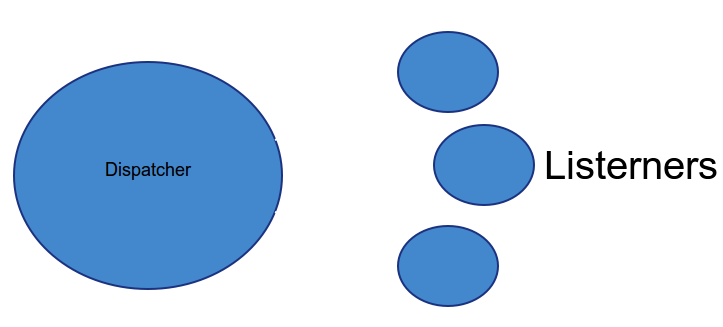

E-Commerce solution based on Symfony 2 components
By Manuel Raynaud / @manuraynaud
Clemont'ech APIHour #9 28/05/2014
- Internationalisation
- Interopérabilité
- Mise en place de bonnes pratiques
- Nouvelles fonctionnalités
BackOffice
- php 5.4
- sf2 components
- Propel
sf2 components
- HttpKernel
- HttpFoundation
- EventDispatcher
- DependencyInjection
- Form
FrontOffice
- HTML 5
- BootStrap 3 + less
étendre Thelia
Structure d'un module
MyModule
MyModule.php
Config
config.xml
module.xml
routing.xml
schema.xml
Controller
MyModuleAdminController.php
I18n
fr_FR.php
en_US.php
Model
Base
Map
MyModule.php
MyModuleQuery.php
Listeners
CartListener.php
OrderListener.php
Loop
MyModuleLoop.php
templates
...
Listeners

Dispatch d'un event
Récupérer le dispatcher
//depuis le container
$eventDispatcher = $container->get('event_dispatcher');
//depuis un event
$eventDispatcher = $event->getDispatcher();
Créer un event
1 event = 1 classe de données
<?php
namespace Thelia\Core\Event;
use Symfony\Component\EventDispatcher\Event;
class Cart extends Event
{
protected $productId;
protected $quantity;
public function __construct($productId, $quantity)
{
$this->productId = $productId;
$this->quantity = $quantity;
}
public function getProductId()
{
return $this->productId;
}
public function getQuantity()
{
return $this->quantity;
}
}
use Thelia\Core\Event\Cart;
use Thelia\Core\Event\TheliaEvents;
//
$eventDispatcher = $container->get('event_dispatcher');
$cartEvent = new Cart(1, 3);
$eventDispatcher->dispatch(TheliaEvent::CART_ADD, $cartEvent);
Liste des events Thelia
Créer un listener
<?php
namespace MyModule\Listener;
use Thelia\Core\Event\TheliaEvents;
use Thelia\Core\Event\CartEvent;
Class CartListener implements EventSubscriberInterface
{
public static function getSubscribedEvents()
{
return [
TheliaEvents::CART_ADD => ['addItem', 100]
];
}
public function addItem(CartEvent $event)
{
$item = $event->getCart()->getLast();
$item->addQuantity(rand(1,5));
$item->save();
}
}
Déclarer le listener
<service id="MyModule.cart.listener" class="MyModule\Listener\Cart">
<tag name="kernel.event_subscriber"/>
</service>
Avantages
- Jouer sur la priorité
- Possibilité de surcharger totalement Thelia
Inconvénient
Rien ne vous assure que votre listener sera exécuté
Routing
Il suffit de créer un fichier routing.xml dans le répertoire Config
MyModule\Controller\MyModuleAdminController::fooAction
Config personnalisée
MyModule/Config/custom_routing.xml
%kernel.cache_dir%
%kernel.debug%
Next ?
- Hooks
- API
- Marketplace